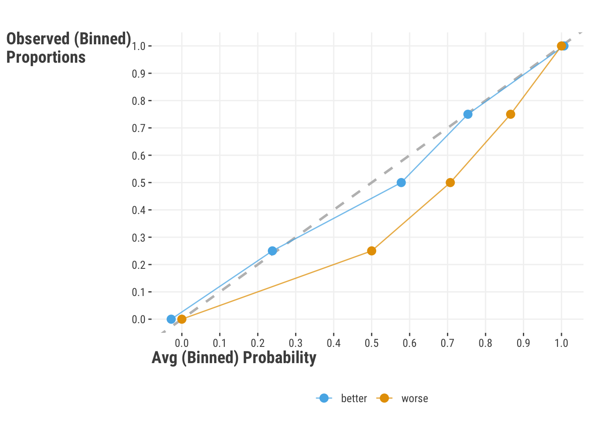

| Target | Feature | Change in X | Change in Y | Benefits |
|---|---|---|---|---|
| y | x | 1 unit | B unit | Interpretation |
| log(y) | x | 1 unit | 100 * (exp(B) -1) | Heteroscedasticity in y |
| log(y) | log(x) | 1% change | B% change | Interpretation, deal with feature extremes |
| y | scale(x) | 1 standard deviation | B unit | Interpretation, estimation |
| scale(y) | scale(x) | 1 standard deviation | B standard deviation | Interpretation, estimation |
9 Data Issues in Modeling
It’s an inescapable fact that models need data to work, even if it’s simulated data. In this chapter we’ll discuss some of the most common data issues, with brief overviews so that you have an idea of why you’d care. There’s a lot to know about data in general before you ever get into modeling your own, so we’ll give you some things to think about it in this chapter.
9.1 Key Ideas
- Data transformations can provide many modeling benefits.
- Categorical data still needs a numeric representation, and this can be done in a variety of ways.
- The data type for the target may suggest a particular model, but does not necessitate one.
- The data structure, e.g. temporal or structural, likewise may suggest a particular model.
- Latent variables are everywhere!
9.2 Standard Feature & Target Transformations
Transforming variables can provide several benefits in modeling, whether applied to the target, covariates, or both, and should regularly be used for most model situations. Some of these benefits include:
- Interpretable intercepts
- More comparable covariate effects
- Faster estimation
- Easier convergence
- Help with heteroscedasticity
For example, merely centering predictor variables, i.e. subtracting the mean, provides a more interpretable intercept that will fall within the actual range of the target variable, telling us what the value of the target variable is when the covariates are at their means (or reference value if categorical). But even if easier interpretation isn’t a major concern, variable transformations can help with convergence and speed up estimation, so can always be of benefit.
9.2.1 Numeric variables
The following table shows the interpretation of some very common transformations applied to numeric variables- logging and standardization, (i.e. standardizing to mean zero, standard deviation one).
For example, it is very common to use standardized variables, or simply ‘scaling’ them. Some also call this normalizing but this can mean a lot of things, so one should be clear in their communication. If \(y\) and \(x\) are both standardized, a one unit (i.e. one standard deviation) change in \(x\) leads to a \(\beta\) standard deviation change in \(y\). Again, if \(\beta\) was .5, a standard deviation change in \(x\) leads to a half standard deviation change in \(y\). In general, there is nothing to lose by standardizing, so you should employ it often.
Another common transformation, particularly in machine learning, is min-max scaling, changing variables to range from some minimum to some maximum, which is almost always zero to one. This can make numeric and categorical indicators more comparable, or at least put the on the same scale for estimation purposes, and so can help with convergence and speed up estimation.
When using sklearn it’s a very verbose process to do a simple transformatin, but this is beneficial when you want to do more complicated things, especially when usind data pipelines.
from sklearn.preprocessing import StandardScaler, MinMaxScaler
import numpy as np
# Create a sample dataset
import numpy as np
# Create a random sample of integers
data = np.random.randint(low=0, high=100, size=(5, 3))
# Apply StandardScaler
scaler = StandardScaler()
scaled_data = scaler.fit_transform(data)
# Apply MinMaxScaler
minmax_scaler = MinMaxScaler()
minmax_scaled_data = minmax_scaler.fit_transform(data)R being made for statistics, it’s much easier to do simple transformations, but you can also use tools like recipes to and mlr3 pipeline operations when needed to make sure your preprocessing is applied appropriately.
# Create a sample dataset
data = matrix(sample(1:100, 15), nrow = 5)
# Standardization
scaled_data = scale(data)
# Min-Max Scaling
minmax_scaled_data = apply(data, 2, function(x) {
(x - min(x)) / (max(x) - min(x))
})Using a log transformation for numeric targets and features is straightforward, and comes with several benefits. For example, it can help with heteroscedasticity, i.e. when the variance of the target is not constant across the range of the predictions1 (demonstrated below), keeping predictions positive after transformation, allows for interpretability gains, and more. One issue with logging is that it is not a linear transformation, and so can make certain more complicated transformations in post-modeling more less straightforward. Also if you have a lot of zeros, log plus one transformations are not going to be enough to help you overcome that hurdle. It also won’t help much when the variables in question have few distinct values, like ordinal variables, which we’ll discuss later in Section 9.2.3.
Min. 1st Qu. Median Mean 3rd Qu. Max.
0.5323 1.8196 2.7330 3.1763 4.0295 12.1670 9.2.2 Categorical variables
A raw character string is not an analyzable unit, so character strings and labeled variables like factors must be converted for analysis to be conducted on them. For categorical variables, we can employ what is called effects coding to test for specific types of group differences. Far and away the most common approach is called dummy coding or one-hot encoding2. In these situations we create columns for each category, and the value of the column is 1 if the observation is in that category, and 0 otherwise. Here is a one-hot encoded version of the season feature.
| seasonFall | seasonSpring | seasonSummer | seasonWinter | season |
|---|---|---|---|---|
| 1.00 | 0.00 | 0.00 | 0.00 | Fall |
| 1.00 | 0.00 | 0.00 | 0.00 | Fall |
| 1.00 | 0.00 | 0.00 | 0.00 | Fall |
| 1.00 | 0.00 | 0.00 | 0.00 | Fall |
| 0.00 | 0.00 | 1.00 | 0.00 | Summer |
| 0.00 | 0.00 | 1.00 | 0.00 | Summer |
TODO: anova for summarizing categorical variables (and interactions)
9.2.3 Ordinal Variables
So far in our discussion, our categorical data has been assumed to have no order. However you may find yourself with orders labels like “low”, “medium”, and “high”, or “bad” … to “good”, or simply are a few numbers, like ratings from 1 to 5. Ordinal data is categorical data that has a known ordering, but which still has arbitrary labels. Let us repeat that, ordinal data is categorical data.
9.2.3.1 Ordinal Features
The simplest way to treat ordinal features is as if they were numeric. If you do this, then you’re just pretending that it’s not categorical, and this is usually fine. Most of the transformations we mentioned probably aren’t going to be as useful, but you can still use them if you want. For example, logging five values of ratings 1-5 isn’t going to do anything for you, but it technically doesn’t hurt anything. But you should know that typical statistics like means and standard deviations don’t really make sense for ordinal data, so the main reason for treating them as numeric is for modeling convenience.
If you choose to treat it as categorical, you can ignore the ordering and do the same as you would with categorical data. There are some specific approaches to coding ordinal data for use in linear models, but they are not common, and they generally aren’t going to help the model or interpreting it, so we do not recommend them. You could however use old-school contrast encodings that you would in traditional ANOVA approaches, but again, you’d need a good reason to do so.
Take home message: treat ordinal features as you would numeric or non-ordered categorical. Either is fine.
9.2.3.2 Ordinal Targets
Ordinal targets are a bit more complicated. If you treat them as numeric, you’re assuming that the difference between 1 and 2 is the same as the difference between 2 and 3, and so on. This is probably not true. If you treat them as categorical, you’re assuming that there is no connection between categories, e.g. that in order to get to category three you have to have gone through category 2. So what should you do?
There are a number of approaches to modeling ordinal targets, but the most common is the proportional odds model. This model can be seen as a generalization of the logistic regression model, and is very similar to it, and actually identical if you only had two categories. But others are also possible, and your results could return something that gives coefficients for the model for the 1-2 category change, the 2-3 category change, and so on.
Ordinality of a categorical outcome is largely ignored in machine learning approaches. The outcome is either treated as numeric or multi-category classification. This is not necessarily a bad thing, especially if prediction is the primary goal.
9.3 Missing Data
Missing data is a common challenge in data science, and there are a number of ways to deal with it, usually by substituting, or imputing some value for the missing one. The most common approaches are:
- Complete case analysis: Only use observations that have no missing data.
- Single value imputation: Replace missing values with the mean, median, mode or some other value of the feature.
- Model-based imputation: Use a model based on complete cases to predict the missing values, and use those predictions are the imputed values.
- Multiple imputation: Create multiple imputed datasets based on the predictive distribution of the model used in model-based imputation. Estimates of coefficients and variances are averaged in some fashion over the imputations.
- Bayesian imputation: Treat the missing values as parameters to be estimated.
The first approach to drop missing data is the simplest, but can lead to a lot of lost data, and can lead to biased statistical results if the data is not missing completely at random. There are special cases of some models that by their nature can ignore the missingness under an assumption of missing at random, but even those models would likely benefit from some sort of imputation. If you don’t have much missing data, this would be fine. How much is too much? Unfortunately that depends on the context, but if you have more than 10% missing, you should probably be looking at alternatives.
The second approach where we just plug in a single value like a mean is also simple, but will probably rarely help your model. Consider a numeric feature that is 50% missing, and for which you replace the missing with the mean. How good do you think that feature will be when at least half the values are identical? Whatever variance it normally would have and share with the target is probably reduced, and possibly dramatically. Furthermore, you’ve also attenuated correlations it has with the other features, which could potentially further hamper interpretation or cause other issues depending on the type of model you’re implementing. Single value imputation makes perfect sense if you know that the missingness means a specific value, like a count feature where missing means a count of zero. If you don’t have much missing data, it’s unlikely this would have any real benefit over complete case analysis, except if it allows you to use all the other features that would otherwise be dropped. But then, why not just drop this feature and keep the others?
Model-based imputation is more complicated, but can be very effective. In essence, you run a model for complete cases in which the target is now the feature with missing values, and the covariates are all the other features and target. You then use that model to predict the missing values, and use those predictions as the imputed values. After these predictions are made, you move on to the next feature and do the same. There are no restrictions on which model you use for which feature. If the other features in the imputation model also have missing data, you can use something like mean imputation to get more complete data if necessary as a first step, and then when their turn comes, impute those values.
Although the implication is that you would have one model per feature and then be done, you can do this iteratively for several rounds, such that the initial imputed values are then used in subsequent models to reimpute the missing values. You can do this as many times as you want, but the returns will diminish.
Multiple imputation (MI) is the most complicated, but can be the most effective under some situations, depending on what you’re willing to sacrifice for having better uncertainty estimates vs. a deeper dive into the model. The idea is that you create multiple imputed datasets, each of which is based on the predictive distribution of the model used in model-based imputation. Say we use a linear regression assuming a normal distribution to impute feature A. We would then draw from the predictive distribution of that model to create a dataset with imputed values for feature A, then do it a gain, say a total of 10 times.
You now have 10 imputed data sets. You then run your actual model of interest on each of these datasets, and your final model results are a kind of average of the parameters of interest (or exactly an average, say for regression coefficients). This main thing this approach provides is that it acknowledges that your single imputation methods have uncertainty in those model predictions being used as imputed values, and that uncertainty is incorporated into the final model results.
MI can in theory handle the any source of missingness and as such is a very powerful approach. But it has several drawbacks. One is that you need statistical or generative model and distribution for all models used, and that distribution is something you have to assume is appropriate. Your final model presumably is also a probabilistic model with coefficients and variances you are trying to estimate and understand. MI isn’t really going to help an XGBoost or deep learning model for example, or at least offer little if anything over single value imputation. If you have very large data and a complicated model, you could be waiting a long time, and as modeling is an iterative process itself, this can be rather tedious to work through. Finally, few data or post-model processing tools that you commonly use will work with MI results, especially visualization ones, and so you will have to hope that whatever package you use for MI has what you need. As an example, you’d have to figure out how you’re going to impute interaction terms if you have them, practically nothing will work with cross-validation approaches,
Practically speaking, MI takes a lot of effort to often come to the same conclusions you would have with a single imputation approach, or possibly fewer conclusions for anything beyond GLM coefficients and their standard errors. But if you want your uncertainty estimate for those models to be better, MI can be an option.
One final option is to run a Bayesian model where the missing values are treated as parameters to be estimated. MI basically is a poor man’s Bayesian imputation approach. A package like brms can do this, and it can be very effective, but it is also very computationally intensive, and can be very slow. At least it would be more fun than standard MI!
9.4 Class Imbalance

Class imbalance refers to the situation where the target variable has a large difference in the number of observations in each class. For example, if you have a binary target, and 90% of the observations are in one class, and 10% in the other, you would have class imbalance. You’ll almost never see a 50/50 split in the real world, but the issue is that as we move further away from that point, we can start to see problems in model estimation, prediction, and interpretation. As a starting point, if we just predict the majority class in a binary classification problem, we’ll be right 90% of the time in terms of accuracy. So right off the bat one of our favorite metrics isn’t going to help us assess model performance as much as we’d like.
In classification problems, class imbalance is the rule, not the exception. This is because nature just doesn’t sort itself into nice and even bins. For example, the majority of people of a random sample do not have cancer, the vast majority of people have not had a heart attack in the past year, most people do not default on their loans, and so on.
There are a number of ways to help deal with class imbalance, and the best approach depends on the context. Some of the most common approaches are:
- Use different metrics: Use metrics that are less affected by class imbalance, such as area under a receiver operating characteristic curve (AUC), or those that balance the
- Oversampling/Undersampling: Randomly sample from the minority (majority) class to increase (decrease) the number of observations in that class.
- Weighted objectives: Weight the loss function to give more weight to the minority class. Although commonly employed, and a simple thing to use with models like lightgbm and xgboost, it often fails to help, and can cause other issues.
- Thresholding: Change the threshold for classification to be more sensitive to the minority class. Nothing says you have to use 0.5 as the threshold for classification, and you can change it to be more sensitive to the minority class. This is a very simple approach, and may be all you need.
These are not necessarily mutually exclusive. For example, it’s probably a good idea to switch to a metric besides accuracy as you employ other techniques.
9.4.1 Calibration issues in classification
Probability calibration is often an issue in classification problems, and is a bit more complicated than just class imbalance but is often discussed in the same setting. Having calibrated probabilities refers to the situation where the predicted probabilities of the target match up well to the actual probabilities. For example, if you predict that 10% of people will default on their loans, and 10% of people actually do default on their loans, one would say your model is well calibrated. Conversely, if you predict that 10% of people will default on their loans, but 20% of people actually do default on their loans, your model is not so well-calibrated.
One of the most common approaches to assessing calibration is to use a calibration curve, which is a plot of the predicted probabilities vs. the observed proportions. In the following, one model seems to align well with the observed proportions based on the chosen bins. The other model is not so well calibrated, and is overshooting with its predictions.

While the issue is an important one, it’s good to keep the issue of calibration and imbalance separate. As miscalibration implies bias, bias can happen irrespective of the class proportions and can be due to a variety of factors related to the model, target, or features, and miscalibration is not inherent to a particular model.
Furthermore, the assessment of calibration with this approach has a few issues. For one, the observed ‘probabilities’ are proportions based on arbitrarily chosen bins and observed values that are measured with some measurement error as well as having natural variance with will partly reflect sample size3. These plots are often presented such that observed proportions are labeled as the “true” probabilities. However, you do not have the true probabilities outside of simulation settings, just the observed class labels, so whether your model’s predicted probabilities match observed proportions is a bit of a different question. The predictions obviously have uncertainty as well, and this will depend on modeling approach, sample size, etc. And finally, the number of bins chosen can also affect the appearance of the plot in a notable way.
All this is to say that each point in a calibration plot has some error bar around it, and the differences between models and the ‘best case scenario’ would need additional steps to suss out. Some methods are available to calibrate probabilities, but they are not commonly implemented in practice, and often involve a model-based technique, with all of its own assumptions and limitations. It’s also not exactly clear that forcing your probabilities to be on the line is helping solve the actual modeling goal in any way4. But if you are interested, you can read more here.
9.5 Censoring and Truncation

Sometimes, we just don’t see all the data there is to see. Censoring is a situation where the target variable is not fully observed. This is common in survival analysis5, where the target is the time to an event, but the event has not yet occurred for some observations. This is called right censoring, and is the most common type of censoring, and depicted in the above plot, where several individuals are only observed to a certain age and were still alive at that time. There is also left censoring, where the censoring happens from the other direction data before a certain point is unknown. Finally, there is interval censoring, where the event of interest occurs within some interval, but the exact value is unknown.
Survival analysis is a common modeling technique in this situation, but you may also be able to keep things even more simple via something like tobit regression. In this approach, you assume that the target is fully observed, but that the values are censored, and you model the probability of censoring. This is a very common approach in econometrics, and can keep you in a traditional linear model context.

Truncation is a situation where the target variable is only observed if it is above or below some value. One of the issues is that default distributional methods, e.g., via maximum likelihood, assume a distribution that is not necessarily bounded. In our plot above, we restrict our data to 70 and below, but typical modeling methods with default distributions would not respect that.
You could truncate predictions after the fact, but this is a bit of a hack, and often results in lumpiness in the predictions at the boundary that isn’t realistic in most situations. Alternatively, Bayesian approaches allow you to model the target as a distribution with truncated distributions, and so you can model the probability of the target being above or below some value. This is a very flexible approach. There are also models such as hurdle models that might prove useful where the truncation is theoretically motivated, e.g. a zero-inflated Poisson model for count data where the zero counts are due to a separate process than the non-zero counts.
One way to distinguish censored and truncated data is that censored data is usually due to some external process such that the target is not observed but could be possible (capping reported income at $1 million), whereas truncated data is due to some internal process that prevents the target from being observed, and is often derived from sample selection (we only want to model non-millionaires). We would not want observations past the censored point to be unlikely, but we would want observations past the truncated point to be impossible. Trickier still is that for bounded or truncated distributions that might be applied to the truncated scenario, such as folded vs. truncated distributions, they would not result in the same probability distributions even if they can be applied to the same situation.
[ ]
]
Image from StackExchange
9.6 Time Series
TODO: ADD CHAPTER LINKS HERE
Time series data is any data that incorporates values over time. This could be something like the a state’s population over years, or the max temperature of an area over days, etc. Time series data is very common, and there are a number of approaches to modeling it, and we usually take special approaches to account for the fact that observations are not independent of one another. The most common approach is to use a time series regression approach, where the target is some value that varies time, and the covariates are other features that can be time-varying or not. There are old school approaches like ARIMA that can still serve as decent [baseline models]LINK THE TO ML CHAPTER, and newer approaches like more sophisticated Bayesian ones that can get quite complex.
Longitudinal data6 is a special case of time series data, where the target is a function of time, but it is typically grouped in some fashion. An example is would be school performance for students over several semesters, where values are clustered within students over time. In this case, you can use a time series regression approach, but you can also use a mixed model (LINK TO THE EXTENSIONS CHAPTER) approach, where you model the target as a function of time, but also include a random effect for the grouping variable, in this case, students. This is a very common approach in many areas, and can be very effective. It can also be used for time series data that is not longitudinal, where the random effects are based on autoregressive covariance matrices.
9.6.1 Time-based Features
When it comes to time-series features, we can apply time-based transformations. One PCA like approach is the fourier transform, which can be used to decompose a time series into its component frequencies. This can be useful for identifying periodicity in the data, and can be used as a feature in a model. In marketing contexts, some perform adstocking on features, which is a way of modeling the lagged of the effect of features over time, such that they may have their most important impact immediately, but still can impact the present target from past values. This avoids directly putting lags for each time point as additional features in the model, though that is an option. In that case you have a feature at present time t, the same feature representing the previous time point t-1, the feature at t-2, etc.
Another thing to note about feature transformations, if you have year as a feature, you can use it as a numeric feature or as a categorical feature. In the former case, if you are only considering a linear effect, you should make the zero meaningful, typically by starting the year values at zero. This makes the intercept in linear models reference the first year rather than year 0, which can actually make it harder to estimate along with the other coefficients in a model. The same goes if you are using months or days as a numeric feature, since there is no ‘zero’ month. It doesn’t really matter which year/month/day is zero, just that zero refers to one of the actual time points observed.
Dates and/or times can be it bit trickier. Often you can just split dates out into year, month, day, etc., and proceed as discussed. In other cases you’d want to track the day to assess potential seasonal effects, where it makes sense to use a cyclic approach (e.g. cyclic spline or sine/cosine transformation) to get at yearly or within-day seasonal effects.
9.7 Spatial Data
TODO: ADD CHAPTER LINKS HERE
We also visit spatial data in a discussion on non-tabular data, but here we want to talk about it from a modeling perspective, especially within the tabular domain. Say you have a target that is a function of location, such as the proportion of people voting a certain way in a county, or the number of crimes in a city. You can use a spatial regression approach, where the target is a function of location among other features that may or may not be spatially oriented. Two approaches already discussed may be applied in the case of having continous spatial features, such as latitude and longitude, or discrete features like county. One model approach to the continuous case include a GAM, where we use a smooth interaction of latitude and longitude. For the discrete setting, we can use a mixed model approach, where we include a random effect for county.
There are other traditional approaches to spatial regression, especially in the continuous spatial domain, such as using a spatial lag approach, where we incorporate information about the neighborhood of a observation’s location into the model. Such models fall under names such as CAR (conditional autoregressive), SAR (spatial autoregressive), BYM, kriging, and so on. These models can be very effective, but are in general different forms of random effects models, and can be seen as special cases of gaussian processes. We feel it’s probably unnecessary to get into details of the traditional spatial models unless you know other standard techniques like GAMs or mixed models won’t work, or more general approach like gaussian process regression isn’t more feasible.
9.8 Latent Variables
TODO: ADD CHAPTER LINKS HERE
Latent variables are a fundamental aspect of modeling, and simply put, are variables that are not directly observed, but are inferred from other variables. Here are some examples of what might be called latent variables:
- The linear combination of features in a linear regression model is a latent variable, but usually we only think of it as such before the link transformation in GLMs.
- The error term in any model is a latent variable representing all the unknown/unobserved/unmodeled factors that influence the target.
- The principal components in PCA.
- The factor scores in a factor analysis model or structural equation.
- The true target underlying the censored values.
- The clusters in a cluster in cluster analysis.
- The random effects in a mixed model.
- The hidden layers in a deep learning model.
It’s easy to see from such a list that latent variables are very common in modeling, so it’s good to get comfortable with the concept. Whether they’re appropriate to your specific situation will depend on a variety of factors, but they can be very useful in many settings, if not a required part of the modeling approach.
TODO: Measurement error?
9.9 Commentary
There’s a lot going on with data before you ever get to modeling, and which will affect every aspect of your modeling approach. This chapter outlines common data types, issues, and associated modeling aspects, but in the end, you’ll always have to make decisions based on your specific situation, and they will often not be easy. These are only some of the things to consider, so be ready for surprises, and, be ready to learn from them!
For the bazillionth time, logging does not make data ‘normal’ so that you can meet your normality assumption in linear regression. The only time that would work is if your data is log-normally distributed to begin with.↩︎
Note that one-hot encoding can refer to just the 1/0 coding for all categories, or to the specific case of dummy coding where one category is dropped. Make sure the context is clear.↩︎
Recall that each bin will only be portion of the test set size.↩︎
Oftentimes we are only interested in the ordering of the predictions, and not the actual probabilities. For example, if we are trying to identify the top 10% of people most likely to default on their loans, we’ll just take the top 10% of predictions, and the actual probabilities are irrelevant for that goal.↩︎
Survival analysis is also called event history analysis, and is a very common approach in biostatistics, sociology, demography, and other disciplines where the target is the time to an event, such as death, marriage, divorce, etc.↩︎
We prefer not to call this panel data, though you may also hear of the term in these situations. In our view it’s not as informative of a description and exclusively used in econometrics-oriented disciplines.↩︎